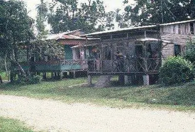

12
12
Cultura vivaCahuita
Casa de la Cultura Walter Ferguson
Museo y espacio dedicado al calipso y patrimonio cultural.
- Consultar antes de ir; mejor de lunes a viernes
- Gratis
El punto de encuentro de Cahuita y escenario de sus celebraciones culturales.
El Parque Alfredo González Flores es el espacio público central de Cahuita. Su historia se remonta a 1915, cuando el expresidente Alfredo González Flores fue rescatado de un naufragio por William Smith, uno de los fundadores de la comunidad.
Como símbolo de gratitud, el parque se convirtió en un punto de encuentro y en el corazón cívico del pueblo.
El parque nació de un gesto de agradecimiento: el rescate del expresidente González Flores en 1915 por parte de William Smith, uno de los fundadores de Cahuita, quedó ligado para siempre a este lugar.
Hoy es escenario de importantes celebraciones culturales, como el Festival Internacional del Calypso, el Día Nacional del Calypso y diversas actividades comunitarias.
12
Museo y espacio dedicado al calipso y patrimonio cultural.

18El hogar de la familia Ferguson y raíz viva del calipso de Cahuita.
 4
4
Punto principal para tours, snorkel y conexión comunitaria.